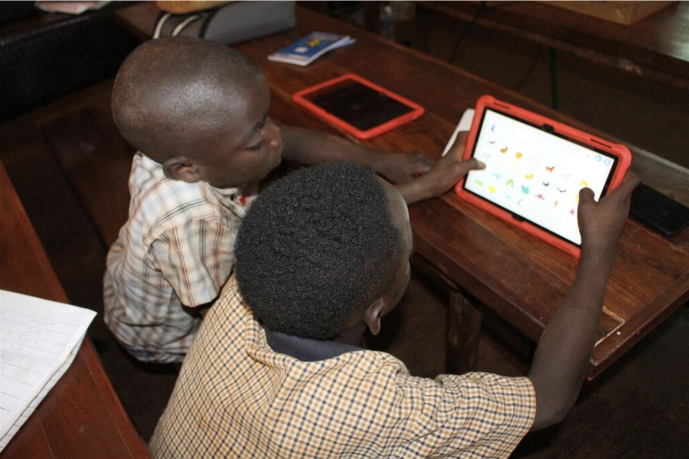

© IAEA A doctor in Mozambique explains how nuclear technology is helping to treat cancer patients.
ON SOURCE: UN News - Global perspective Human stories
Global push for AI governance amid warnings of ‘catastrophic harm’
ByHisae Kawamori
5 July 2026 Culture and Education
Can artificial intelligence benefit all of humanity – safely, fairly and without causing “catastrophic harm”? That is the question at the heart of a major UN summit opening in Geneva on Monday.
Governments, tech companies, academics and civil society will spend two days at the Global Dialogue on AI Governance wrestling with how to regulate a technology that is evolving faster than the rules meant to contain it.
AI, if used responsibly, could bring transformational benefits to people across the world, but there are also fears the revolutionary technology is creating new dangers; And while it continues to evolve at a lightning pace, the safeguards needed to regulate it are struggling to keep up.
UN Photo/Eskinder Debebe Maria Ressa, Yoshua Bengio and Egriselda López. (left to right)
Ahead of the meeting UN News spoke to four of the participants; Two co-chairs of the Dialogue and two co-chairs of the UN’s Independent International Scientific Panel on Artificial Intelligence which has just published a report on the opportunities and risks of AI.
They spoke about the benefits but also the risks associated with AI and the need to agree on some form of universally-accepted global guardrails.
Yoshua Bengio (Scientific Panel): AI is approaching or surpassing human capabilities in many domains. It is outpacing both scientific understanding and governments’ ability to adapt. There have been incredible advances which are changing the world and it doesn't look like it's stopping.
UN Photo/Evan Schneider Ambassador Rein Tammsaar of Estonia addresses the Security Council. (file)
Ambassador Rein Tammsaar of Estonia (Global Dialogue): For many countries in the world, AI could be a great equalizer. It can support economic development, advance competitiveness, support science and health systems. Machine learning in general could benefit productivity. This is the potential.
AmbassadorEgriselda López of El Salavador (Global Dialogue): AI can be a tool for governments to better improve their work and the delivery of services.
Rein Tammsaar: AI is a tool that millions of people around the world can benefit from. But at the same time, if it gets into the wrong hands, it could also be used for coercive purposes, to erode trust in governments, undermine democratic structures, and for propaganda and against information integrity.
© Adobe Stock/JP Photography A sign is held up which renounces hate.
Maria Ressa(Scientific Panel): The first generation of AI was used in social media, and that pushed lies faster. If it's laced with fear, anger and hate, it spreads virally. Information integrity is the core of the battle. If you can't tell fact from fiction, you cannot have a democracy.
This is the dilemma we face, and it's the reason I call it an ‘information Armageddon’.
Yoshua Bengio: With growing evidence of deceptive AI behaviour, science currently cannot guarantee that as capabilities continue to increase, AI will not cause catastrophic harm, either on its own or due to malicious users.
Rein Tammsaar:The frontier developers are basically concentrated in two countries [US and China]. This leaves other countries with a lot of questions.
Developing countries, in particular, are worried that in the worst-case scenario, the AI divide would leave them behind. Its development is unfolding with such a speed that they may not be able to recover and to catch up.
Egriselda López:The AI divide is real. Some countries have very strong infrastructure and strong skills and research capacities. Whereas there are others that are still struggling with issues like connectivity and public infrastructure

© UNHCR/Maimuna Mtengela Two young boys work on a tablet in Tanzania.
Maria Ressa: The world cannot govern what it cannot understand. The Panel’s report provides independent science, drawn from every region, and available to every government. Its message is clear: the potential is great, but the risks are real, and the cost of waiting is rising.
Yoshua Bengio: I would like more governments around the world to understand the scenarios for the future development of AI. We don't have the right national or even international governance tools, and we don't have good ways to steer the benefits so that they are shared by everyone. To act effectively, global policymakers must understand these systems
Egriselda López:The Global Dialogue is the first platform in the United Nations for the discussion of AI governance. It's also an opportunity for Member States to come together to have an inclusive discussion; But not only governments, it's also about bringing together different stakeholders.
Maria Ressa: Not one country can actually deal with this technology on its own; It needs to be a multilateral solution. And the body that is set up that could do this is the United Nations. Now the question is, will its Member States move?
Open on original site ↗The UN and AI
The Independent International Scientific Panel on Artificial Intelligence is made up of 40 experts from every region of the world serving in their personal capacity. The Panel published its first report on July 1.
The Panel's work feeds into the UN Global Dialogue on AI Governance which is taking place in Geneva from 6-7 July 2026, where the international community will discuss international approaches to managing the technology.
ON SOURCE: UN News - Global perspective Human stories